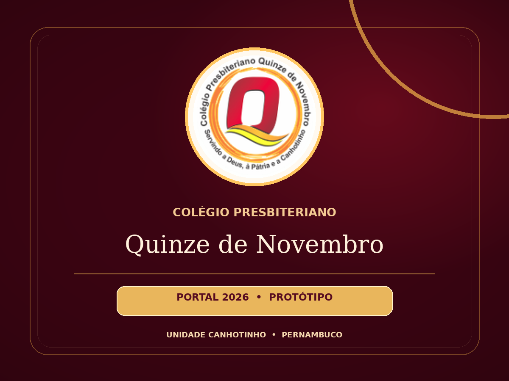

Colégio Presbiteriano Quinze de Novembro | Canhotinho
Portal institucional 2026 | Protótipo responsivo da unidade Canhotinho

Projeto demonstrativo independente: proposta conceitual de redesign, não apresentada como portal oficial nem como implementação contratada pela instituição.
O que é
Proposta de modernização da presença digital do Colégio Presbiteriano Quinze de Novembro, unidade Canhotinho (PE), destacando sua identidade própria, educação cristã, acolhimento e excelência. O protótipo organiza o conteúdo institucional em uma interface contemporânea, responsiva e fácil de navegar.
Pontos fortes
- Experiência responsiva adaptada a desktop, tablet e smartphone
- Identidade visual inspirada na fachada e na logomarca institucional
- Paleta em vinho, dourado, laranja e creme
- Seções institucionais para apresentar a escola e sua proposta educacional
- Menu e navegação concebidos para facilitar o acesso de pais e estudantes
- Protótipo navegável com recursos e integrações sujeitos à validação da escola